# A tibble: 6 × 8
species island bill_length_mm bill_depth_mm flipper_l…¹ body_…² sex year
<fct> <fct> <dbl> <dbl> <int> <int> <fct> <int>
1 Adelie Torgersen 39.1 18.7 181 3750 male 2007
2 Adelie Torgersen 39.5 17.4 186 3800 fema… 2007
3 Adelie Torgersen 40.3 18 195 3250 fema… 2007
4 Adelie Torgersen NA NA NA NA <NA> 2007
5 Adelie Torgersen 36.7 19.3 193 3450 fema… 2007
6 Adelie Torgersen 39.3 20.6 190 3650 male 2007
# … with abbreviated variable names ¹flipper_length_mm, ²body_mass_gData Visualization with ggplot2
some morals
“The simple graph has brought more information to the data analyst’s mind than any other device.” —John Tukey
“It is true that data visualization is part data science and part art. That being said, even the most creative art is supported by theories that explain why it works.”
—Michiko Wolcott
what is tidy data

what is tidy data

what is tidy data
in essence, tidy data is data that can be put through standardized tools

the grammar of graphics
the “grammar of graphics” is the answer to the question “what is a statistical graphic?”
basic structure
the basic structure of a ggplot looks something like:
let’s do an example
palmerpenguins
here’s the palmerpenguins dataset
our first ggplot
our first ggplot

our first ggplot
our first ggplot

our first ggplot
ggplot(penguins,
aes(
x = bill_length_mm,
y = bill_depth_mm,
color = species,
shape = species,
label = species,
group = species
)) +
stat_ellipse() +
geom_point() +
geom_label(
data = penguins |> group_by(species) |> summarize(across(c(bill_length_mm, bill_depth_mm), mean, na.rm=T)),
alpha = 0.8
) +
xlab("Bill Length [mm]") +
ylab("Bill Depth [mm]") +
ggtitle("Relationship of Species, Bill Length, and Bill Depth",
"Penguins observed near Palmer Station, Antarctica, 2007-2009") +
theme_bw() +
theme(legend.position = 'none')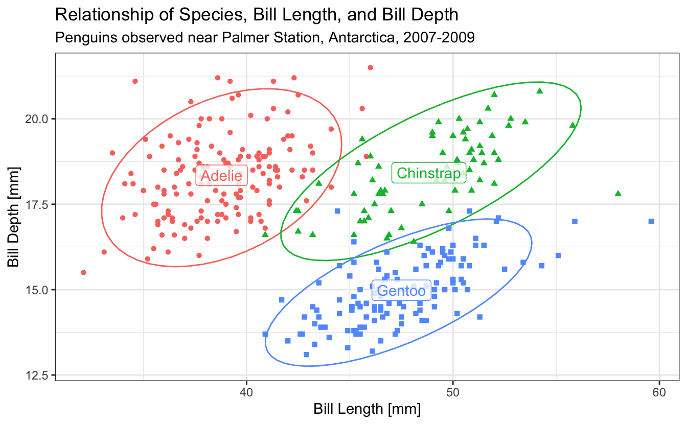
visual channels
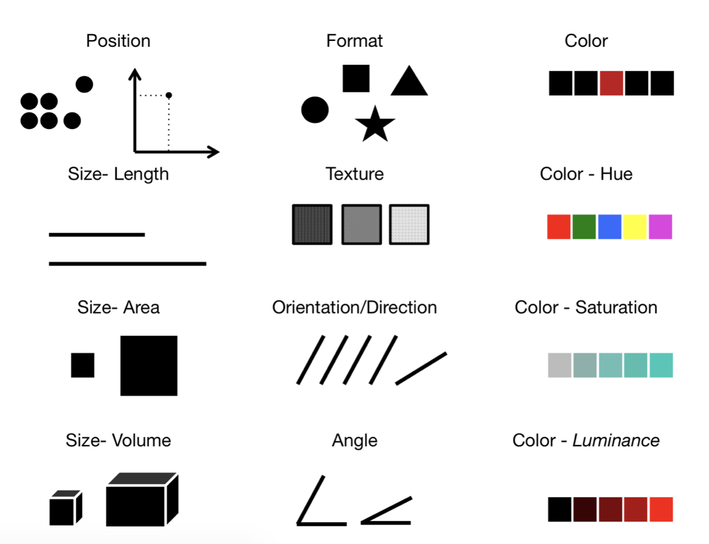visual channels

univariate geoms
geom_bar
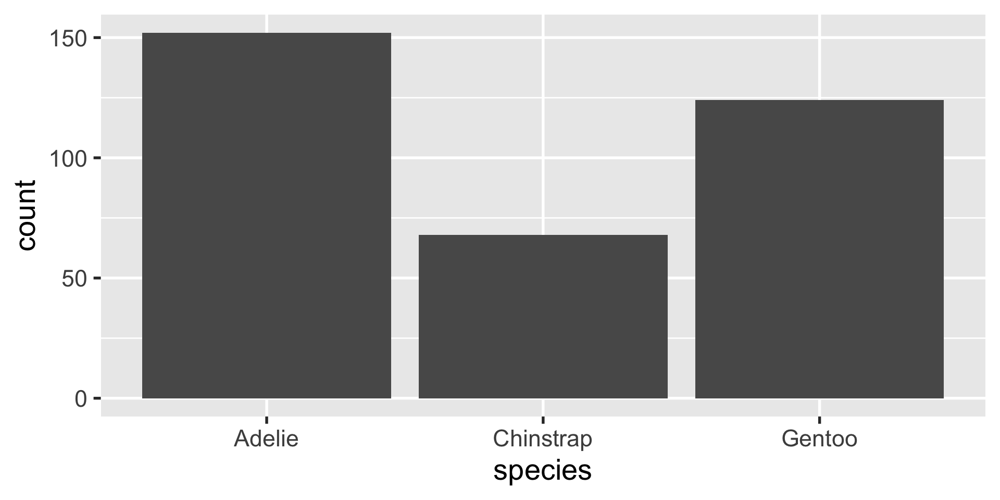geom_col
# A tibble: 3 × 2
species n
<fct> <int>
1 Adelie 152
2 Chinstrap 68
3 Gentoo 124
geom_histogram
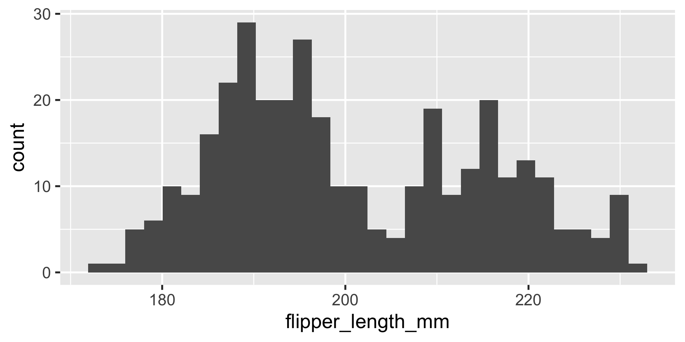geom_histogram
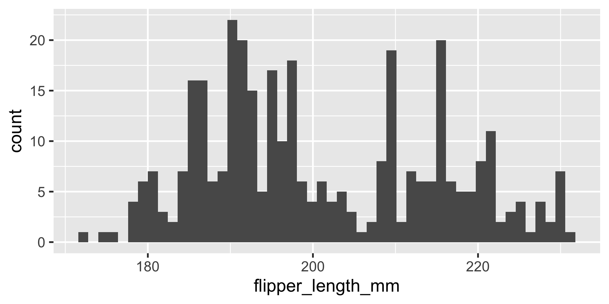geom_histogram
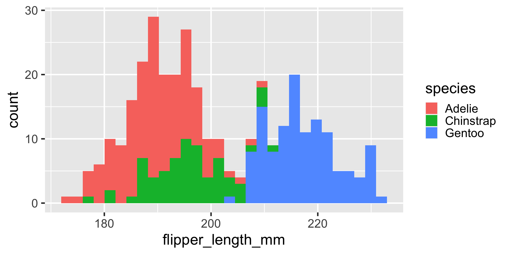geom_density
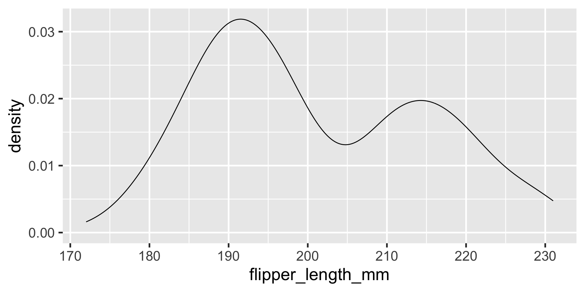geom_density
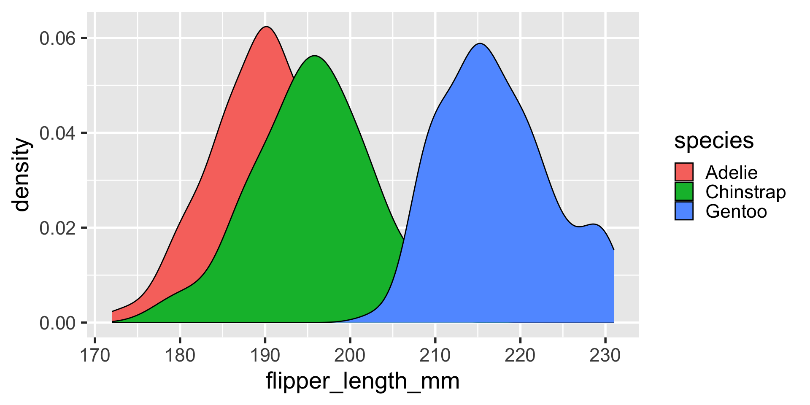geom_density

bivariate geoms
geom_point
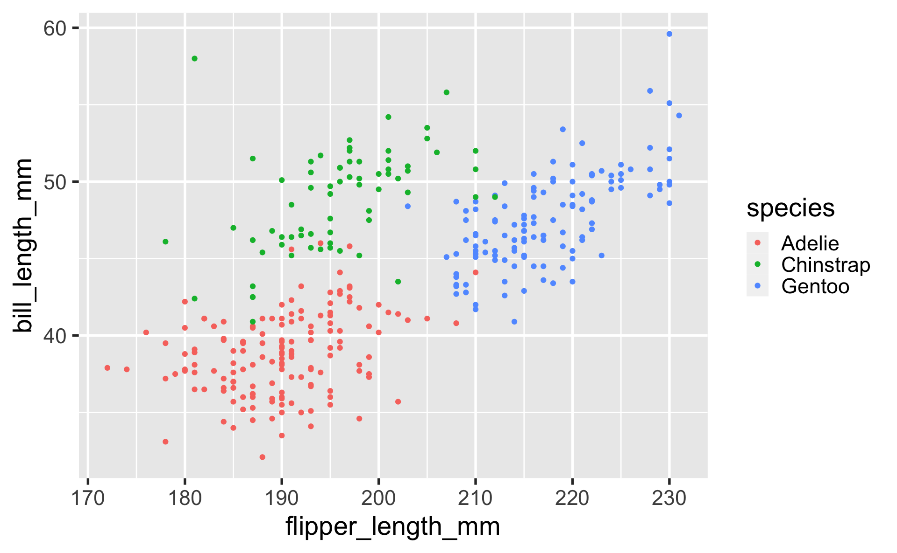geom_point
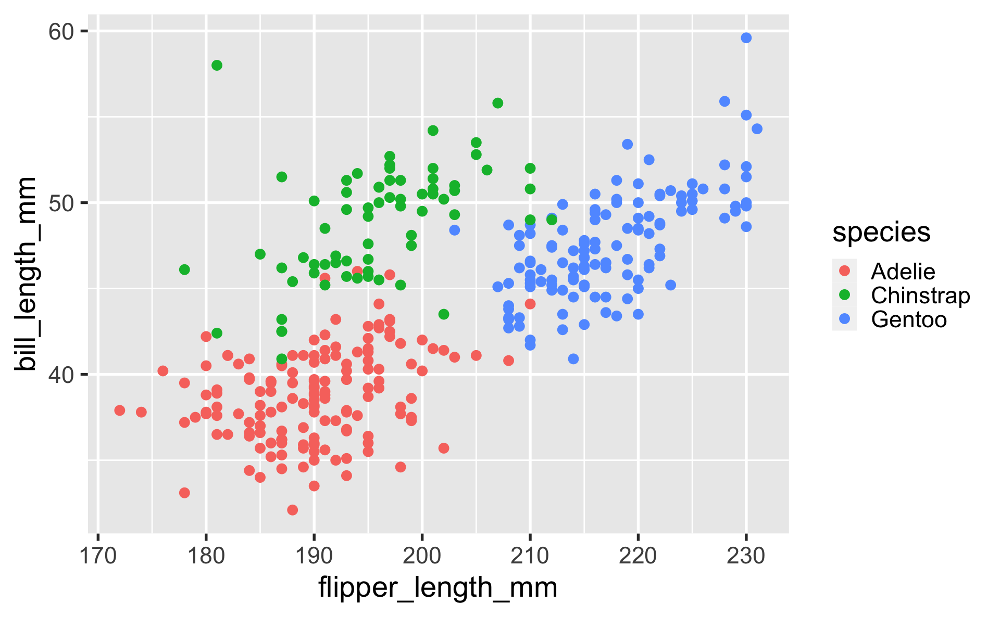geom_point

geom_point
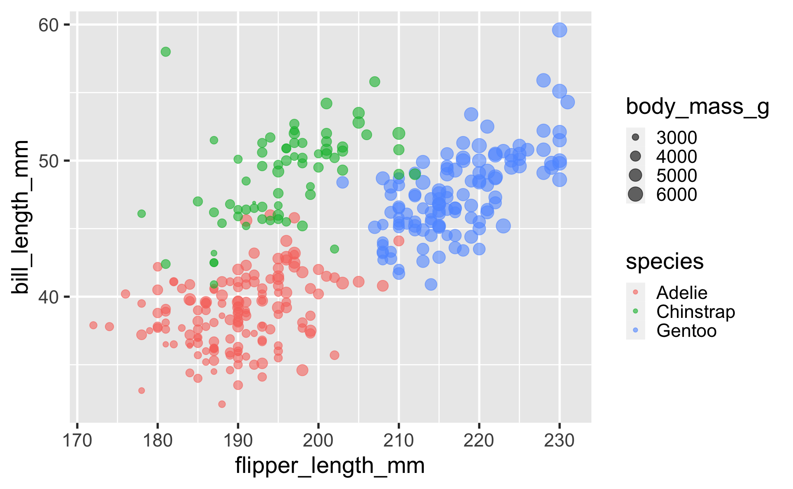geom_line
lines are great to use to depict observations that are conceptually connected — either across time, or thematically.
for example, maybe we would want to know if the average flipper length in the population of penguins observed is changing over time.
flipper_length_over_time <-
data.frame(
year = c(2007, 2007, 2007,
2008, 2008, 2008,
2009, 2009, 2009),
flipper_length_mm =
c(186.5, 192.4, 215.1,
191.0, 197.7, 217.5,
192.0, 198.0, 218.4),
species = as.factor(
c(
"Adelie", "Chinstrap", "Gentoo",
"Adelie", "Chinstrap", "Gentoo",
"Adelie", "Chinstrap", "Gentoo"
)))
ggplot(flipper_length_over_time,
aes(x = year,
y = flipper_length_mm,
color = species)) +
geom_line()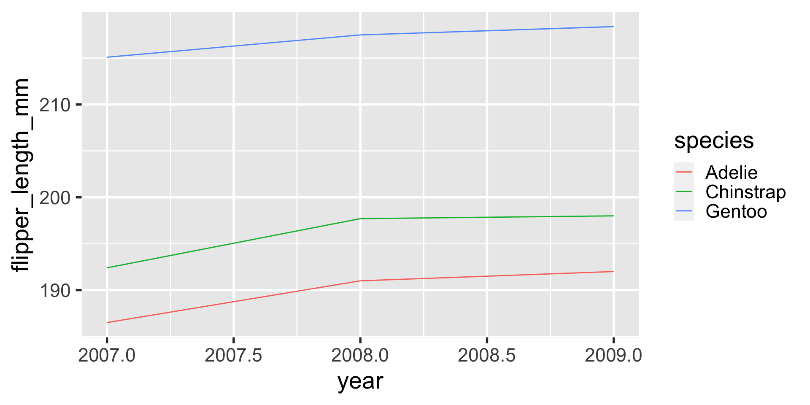
geom_line
a lot of the time when using geom_line, I like to pair that with a geom_point layer on top of it, so where the observations are is more clear.
geom_area
geom_area when used with only one group of data is similar to geom_line, except it fills in the area beneath. this can be useful for depicting how a population breaks down into strata over time.
| year | group | population_size |
|---|---|---|
| 1947 | Employed | 60.323 |
| 1947 | Unemployed | 235.600 |
| 1947 | Armed.Forces | 159.000 |
| 1948 | Employed | 61.122 |
| 1948 | Unemployed | 232.500 |
| 1948 | Armed.Forces | 145.600 |
| 1949 | Employed | 60.171 |
| 1949 | Unemployed | 368.200 |
| 1949 | Armed.Forces | 161.600 |
| 1950 | Employed | 61.187 |
| 1950 | Unemployed | 335.100 |
| 1950 | Armed.Forces | 165.000 |
| 1951 | Employed | 63.221 |
| 1951 | Unemployed | 209.900 |
| 1951 | Armed.Forces | 309.900 |
| 1952 | Employed | 63.639 |
| 1952 | Unemployed | 193.200 |
| 1952 | Armed.Forces | 359.400 |
| 1953 | Employed | 64.989 |
| 1953 | Unemployed | 187.000 |
| 1953 | Armed.Forces | 354.700 |
| 1954 | Employed | 63.761 |
| 1954 | Unemployed | 357.800 |
| 1954 | Armed.Forces | 335.000 |
| 1955 | Employed | 66.019 |
| 1955 | Unemployed | 290.400 |
| 1955 | Armed.Forces | 304.800 |
| 1956 | Employed | 67.857 |
| 1956 | Unemployed | 282.200 |
| 1956 | Armed.Forces | 285.700 |
| 1957 | Employed | 68.169 |
| 1957 | Unemployed | 293.600 |
| 1957 | Armed.Forces | 279.800 |
| 1958 | Employed | 66.513 |
| 1958 | Unemployed | 468.100 |
| 1958 | Armed.Forces | 263.700 |
| 1959 | Employed | 68.655 |
| 1959 | Unemployed | 381.300 |
| 1959 | Armed.Forces | 255.200 |
| 1960 | Employed | 69.564 |
| 1960 | Unemployed | 393.100 |
| 1960 | Armed.Forces | 251.400 |
| 1961 | Employed | 69.331 |
| 1961 | Unemployed | 480.600 |
| 1961 | Armed.Forces | 257.200 |
| 1962 | Employed | 70.551 |
| 1962 | Unemployed | 400.700 |
| 1962 | Armed.Forces | 282.700 |
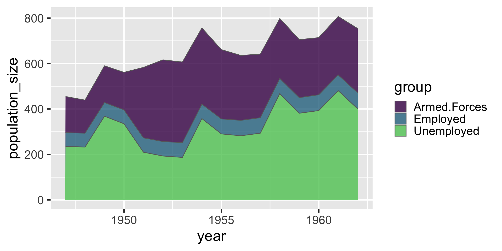
geom_text
we can use geom_text similarly to geom_point, but instead of plotting a small mark, geom_text places text on the graph.
geom_text
one use of geom_text that I particularly enjoy is to make what usually has to be guesstimated precise:
# A tibble: 3 × 2
species n
<fct> <int>
1 Adelie 152
2 Chinstrap 68
3 Gentoo 124geom_boxplot
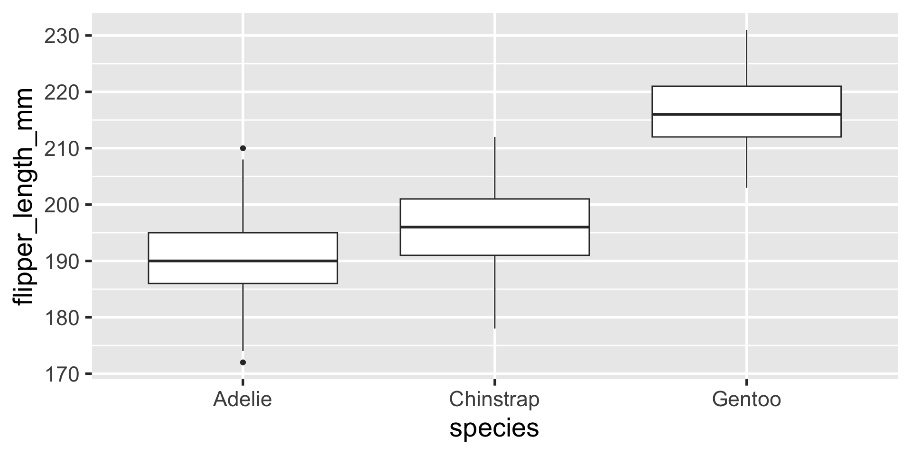geom_boxplot
if i am going to use boxplots, something i often like to do is to plot the data with jitter behind the boxplots and give the boxplots some transparency.
also, i’m a sucker for colorful figures, so i’ll almost always add color
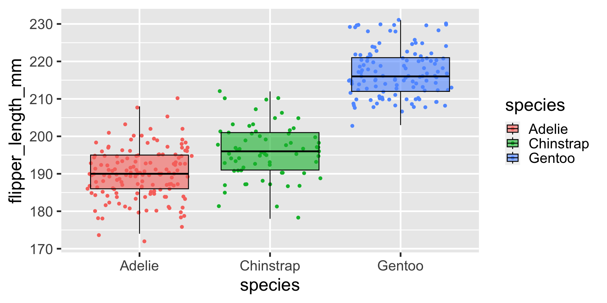geom_violin
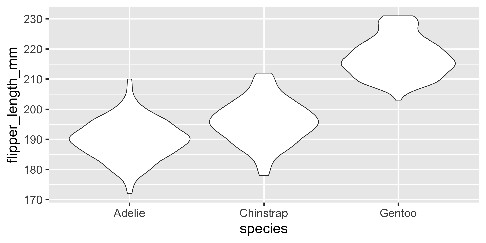geom_violin
a similar layout can be done with geom_violin
geom_tile
heatmaps can be created with geom_tile
geom_tile
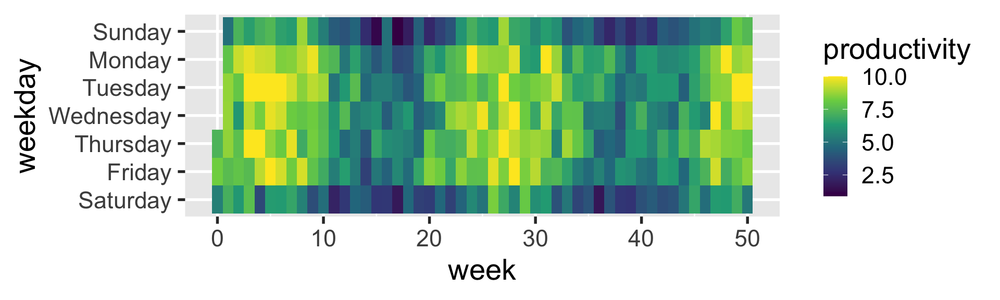facets
facet_wrap
faceting generates multiple panels within a visualization, each showing a different subset of the data.
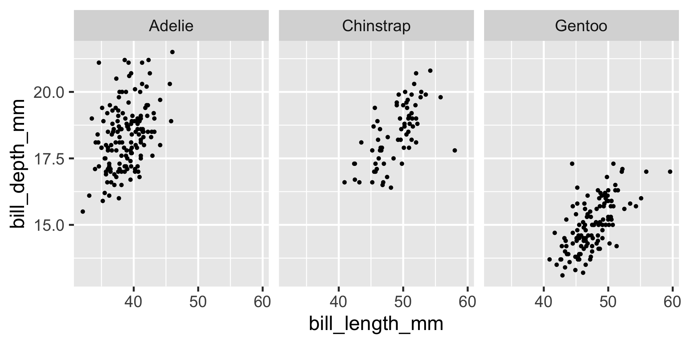facet_grid
facet_grid gives you more precision in how the faceting panels are laid out by using the left-hand-side and right-hand-side to indicate to the rows and columns.

the easiest way for me to remember which variable corresponds to the columns vs. rows in the facet_grid formula is to remember how formulas usually look, as in y ~ x or y = m*x + b.
y is the variable that corresponds to the vertical dimension and is on the left-hand-side – so y or the left-hand-side corresponds to the rows, while x informs us about the horizontal dimension, so x or the right-hand-side corresponds to the columns.
statistics
let’s say you have a ton of data such that creating a scatter plot isn’t all that useful.
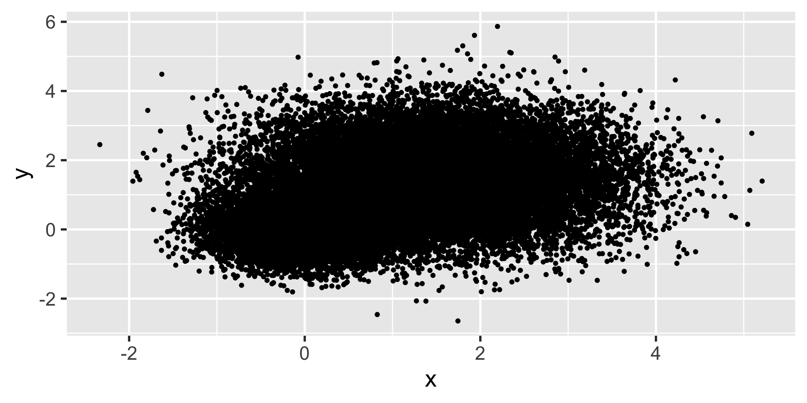we want to know if this is one cluster or two… we might look at histograms in x and y.
geom_density2d
but when that still doesn’t work, we can turn to calculating some summary statistics in 2d with geom_density2d
stat_summary
stat_summary is a very flexible layer that can perform computations for you and depict the results with a geom of your choice
stat_summary
we can use stat_summary to show us the mean, min and max using a pointrange geom
stat_summary
we can use stat_summary to show us the mean, min and max using a pointrange geom
coordinates
scale_x_* and scale_y_*
occasionally we have data that is best represented on a non-linear scale, like the log-scale. ggplot makes it very easy to do this. compare:
scale_color_* and scale_fill_*
often you will want to customize the color and fill palettes in your plots. there are a handful of ways to do this, and they typically fall into 3 categories:
- categorical
scale_*_discrete()scale_*_brewer()
- quantitative
scale_*_continuous()scale_*_distiller()scale_*_gradient()
- manual
scale_*_manual()
scale_color_* and scale_fill_*
Having trouble picking a color palette for your #Rstats visualization? Well here's a MEGA thread about all the ways you can choose a palette! 🧵[1/22]
— Moriah Taylor (she/her) (@moriah_taylor58) May 20, 2021
https://twitter.com/moriah_taylor58/status/1395431000977649665
coordinate labelling
sometimes you want to format the way the axis numbers appear in a particular way, like in scientific format or in dollars.
themes
themes
you can basically customize every aspect of the theme in ggplot.
labels
use the labs() function to set labels for any aesthetics.
legend position
the legend position can be moved using the legend.position argument to theme()
saving plots
use ggsave() to save your plots. keep in mind that the filename saved will be relative to your working directly unless you use an absolute path.
# one option:
# render your ggplot as normal
ggplot(df, aes(...)) + ...
# then run
ggsave(filename = "your_filename.png", width = 5,
height = 7) # width and height default to inches
# another option:
# assign your plot to an object
plt <- ggplot(df, aes(...)) + ...
ggsave(filename = "your_filename.png",
plot = plt, # give the plt object to ggsave explicitly
width = 5,
height = 7)extensions
ggdist

learn more: https://mjskay.github.io/ggdist/
ggrepel

learn more: https://ggrepel.slowkow.com/
patchwork

learn more: https://patchwork.data-imaginist.com/
key takeaways
- ggplot2 is based on the grammar of graphics, meaning every plot is made up of: data, aesthetics, geometries, facets, statistics, coordinates, and a theme.
- ggplot2 is “plug and play” (like legos) in the sense that there is a ton of varied geoms, stats, and customizations you can make with interchangeable layers
- it’s easiest to build up your plots incrementally, starting from an overly simple, crude version and working your way up to something more refined; don’t try to make a masterpiece all in one go because it will make debugging your code harder
- if the kind of data visualization you want to make isn’t supported out of the box in ggplot2, likely you can either use or create an extension to ggplot2 that will do what you want.